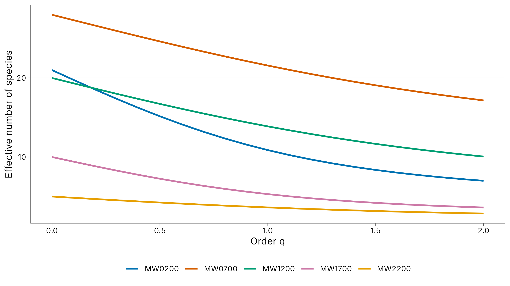
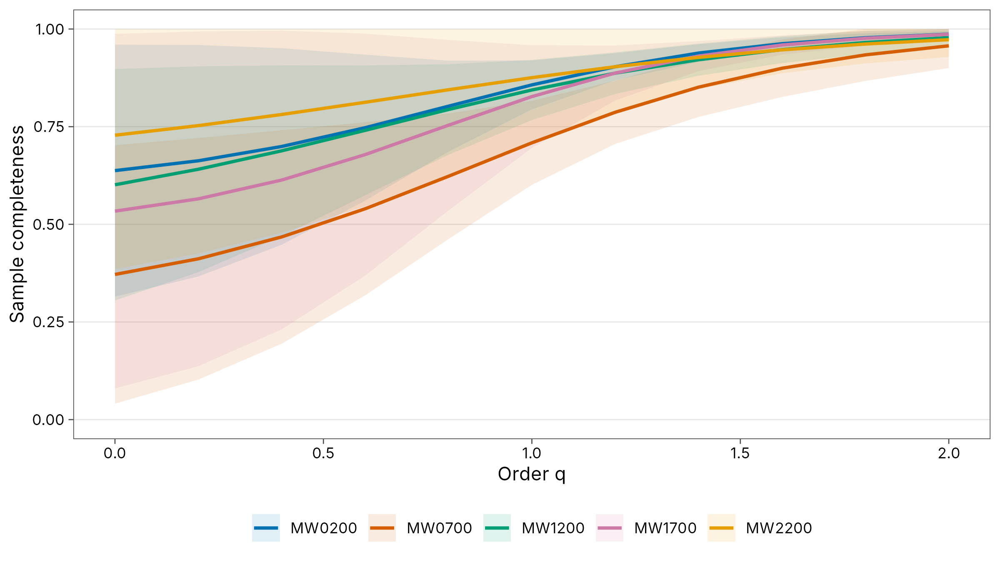

2. Hill numbers, completeness and coverage
Source:vignettes/articles/guide-02-hill-numbers.Rmd
guide-02-hill-numbers.RmdThe data are ant records at baits in the wet season at five
elevations on Mt Wilhelm, Papua New Guinea (200 to 2,200 m). Each row is
one species at one bait. To keep the theory simple, this chapter treats
every record as one observation (as for abundance data,
= number of records). For a formal incidence analysis, with baits as
sampling units, give unit = bait (Chapter 1); the logic and
the reading of the results are the same.
1. What is diversity? Hill numbers
The concept
Diversity combines two things: how many species there are (richness) and how evenly individuals are spread among them. A forest with 10 species, one making up 91 % of the trees, feels less diverse than one with 10 equally common species. Classic indices (Shannon H′, Simpson D) capture this but are on incompatible scales: doubling the species does not double H′.
Hill numbers (Hill 1973) solve this. The Hill number of order is
where is the relative abundance of species and the number of species. It is the effective number of species: the number of equally common species that would give the same diversity. All Hill numbers are in units of species, and a community with twice as many equally common species has exactly twice the diversity (the “replication principle”; Jost 2006; Chao et al. 2014).
| Order | Formula | Equals | Sensitive to | Read it as |
|---|---|---|---|---|
| Species richness | Rare species as much as common ones | Number of species | ||
| Exponential of Shannon entropy | Species in proportion to abundance | Number of “typical” species | ||
| Inverse Simpson index | Common species | Number of dominant species |
Reading them together describes evenness: if , and are similar, the community is even; if they fall steeply with , a few species dominate.
obs <- div_hill(ants, q = 0:2)
knitr::kable(tidyr::pivot_wider(obs, names_from = q, names_prefix = "q", values_from = diversity),
digits = 1, caption = "Observed Hill numbers per site (n = number of records)."
)| site | n | q0 | q1 | q2 |
|---|---|---|---|---|
| MW0200 | 76 | 21 | 10.9 | 7.0 |
| MW0700 | 58 | 28 | 21.6 | 17.2 |
| MW1200 | 57 | 20 | 13.9 | 10.1 |
| MW1700 | 34 | 10 | 5.3 | 3.6 |
| MW2200 | 15 | 5 | 3.6 | 2.8 |
Interpretation. At MW0200 there are 21 species but only 7 effective dominant ones: a few species occupy most baits. The steep fall from to is a signature of unevenness.
Diversity profiles
Plotting continuously from to shows the whole picture at once. Curves that cross mean the ranking of sites depends on whether you weight rare or common species, which is itself a result worth reporting.
prof <- div_hill(ants, q = seq(0, 2, by = 0.1))
ggplot(prof, aes(q, diversity, colour = site)) +
geom_line(linewidth = 0.9) +
scale_colour_tidydiversity() +
labs(x = "Order q", y = "Effective number of species", colour = NULL) +
theme_tidydiversity()
2. How complete is the sample? Coverage
The concept
No sample contains every species. The question is how much of the community it represents. Turing and Good (Good 1953) showed that the proportion of the community belonging to species not yet seen can be estimated from the singletons (, species seen once): if many species were seen only once, many more are still unseen.
Sample coverage is the estimated proportion of individuals in the community that belong to species present in the sample (Chao and Jost 2012):
with the sample size and the number of doubletons. A coverage of 0.9 means the next individual (or record) sampled has a 10 % chance of being a species not yet seen.
cov <- div_coverage(ants)
knitr::kable(cov, digits = 3,
caption = "Sample size, observed species, singletons, doubletons and coverage."
)| site | n | s_obs | f1 | f2 | coverage |
|---|---|---|---|---|---|
| MW0200 | 76 | 21 | 11 | 5 | 0.857 |
| MW0700 | 58 | 28 | 17 | 3 | 0.709 |
| MW1200 | 57 | 20 | 9 | 3 | 0.844 |
| MW1700 | 34 | 10 | 6 | 2 | 0.827 |
| MW2200 | 15 | 5 | 2 | 1 | 0.876 |
Interpretation. Coverage ranges from 0.71 (MW0700) to 0.88 (MW2200). MW0700 has the most singletons relative to its sample: it is the least completely sampled, so its observed richness underestimates the truth the most. As a rule of thumb:
| Coverage | Sampling is | Observed richness is |
|---|---|---|
| > 0.95 | Nearly complete | Close to the truth |
| 0.80-0.95 | Adequate for most comparisons | An underestimate; compare at equal coverage (Chapter 3) |
| < 0.80 | Incomplete | A clear underestimate; extrapolate or sample more |
Completeness profiles
Coverage concerns individuals (it is the completeness of order ). Sample completeness generalises it to every order (Chao et al. 2020): for it is the share of species detected; for the share weighted towards common species. Completeness is always lowest at , because rare species are the ones most likely to be missed.
set.seed(1)
comp <- div_completeness(ants, nboot = 50)
ggplot(comp, aes(q, completeness, colour = site, fill = site)) +
geom_ribbon(aes(ymin = lower, ymax = upper), alpha = 0.12, colour = NA) +
geom_line(linewidth = 0.9) +
scale_colour_tidydiversity() +
scale_fill_tidydiversity() +
scale_y_continuous(limits = c(0, 1)) +
labs(x = "Order q", y = "Sample completeness", colour = NULL, fill = NULL) +
theme_tidydiversity()
Interpretation. At completeness is well below 1 for every site: many species are still undetected. By it is close to 1: the common species are well sampled. So conclusions about dominant species are robust; conclusions about richness are not, unless corrected.
3. Estimating true diversity
The concept
Observed richness depends on how hard you looked. Asymptotic estimators predict the diversity of the whole community (the asymptote of the species-accumulation curve) from the frequencies of rare species. For richness this is the Chao1 estimator (Chao 1984):
a lower bound: the true richness is at least this. Chao et al. (2014) give corresponding estimators for and .
set.seed(1)
est <- div_estimate(ants, q = 0:2, nboot = 100)
knitr::kable(est, digits = 1,
caption = "Observed and asymptotic Hill numbers with bootstrap 95 % intervals."
)| site | q | observed | estimate | se | lower | upper |
|---|---|---|---|---|---|---|
| MW0200 | 0 | 21.0 | 32.9 | 18.3 | 22.4 | 123.7 |
| MW0200 | 1 | 10.9 | 13.8 | 2.2 | 10.9 | 18.1 |
| MW0200 | 2 | 7.0 | 7.6 | 1.4 | 7.0 | 10.3 |
| MW0700 | 0 | 28.0 | 75.3 | 36.6 | 40.4 | 209.2 |
| MW0700 | 1 | 21.6 | 38.8 | 9.4 | 21.6 | 57.2 |
| MW0700 | 2 | 17.2 | 24.0 | 5.4 | 17.2 | 34.5 |
| MW1200 | 0 | 20.0 | 33.3 | 9.1 | 23.9 | 64.7 |
| MW1200 | 1 | 13.9 | 18.8 | 3.0 | 13.9 | 24.7 |
| MW1200 | 2 | 10.1 | 12.0 | 2.4 | 10.1 | 16.7 |
| MW1700 | 0 | 10.0 | 18.7 | 8.8 | 11.7 | 54.9 |
| MW1700 | 1 | 5.3 | 7.0 | 1.7 | 5.3 | 10.4 |
| MW1700 | 2 | 3.6 | 3.9 | 0.8 | 3.6 | 5.4 |
| MW2200 | 0 | 5.0 | 6.9 | 2.3 | 5.3 | 17.3 |
| MW2200 | 1 | 3.6 | 4.5 | 1.1 | 3.6 | 6.7 |
| MW2200 | 2 | 2.8 | 3.3 | 1.1 | 2.8 | 5.4 |
How to read it.
-
estimateis the predicted diversity of the whole community, with its bootstrap standard error and 95 % interval. - The gap between
observedandestimateis largest at and smallest at , mirroring the completeness profiles. - Wide intervals for are normal: estimating how many rare species you did not see is hard. Treat asymptotic richness as an order of magnitude when coverage is low; and estimates are much more precise and usually the better basis for conclusions.
How to report it
We quantified diversity as Hill numbers of order q = 0 (species richness), 1 (exponential Shannon) and 2 (inverse Simpson), using tidydiversity (Moses 2026) in R. Sample coverage ranged from 0.71 to 0.88 (Chao and Jost 2012). Asymptotic diversity was estimated following Chao et al. (2014), with 95 % confidence intervals from 100 bootstrap replicates.
References
Chao, A. (1984). Nonparametric estimation of the number of classes in a population. Scandinavian Journal of Statistics, 11, 265-270.
Chao, A. and Jost, L. (2012). Coverage-based rarefaction and extrapolation. Ecology, 93, 2533-2547.
Chao, A. et al. (2014). Rarefaction and extrapolation with Hill numbers. Ecological Monographs, 84, 45-67.
Chao, A. et al. (2020). Quantifying sample completeness and comparing diversities among assemblages. Ecological Research, 35, 292-314.
Good, I. J. (1953). The population frequencies of species and the estimation of population parameters. Biometrika, 40, 237-264.
Hill, M. O. (1973). Diversity and evenness: a unifying notation and its consequences. Ecology, 54, 427-432.
Jost, L. (2006). Entropy and diversity. Oikos, 113, 363-375.
Moses, J., Peters, M. K., Tiede, Y., Mottl, O., Donoso, D. A., Farwig, N., Fayle, T. M., Novotny, V., Sanders, N. J. and Klimes, P. (2023). Nutrient use by tropical ant communities varies among three extensive elevational gradients: a cross-continental comparison. Data: Mottl, O., Moses, J. and Klimes, P. (2023), Zenodo, doi:10.5281/zenodo.8191946.